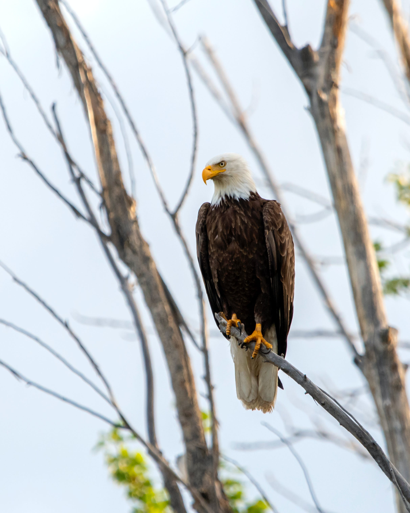

Eagles are large, powerfully-built birds of prey, with heavy heads and beaks. Even the smallest eagles, such as the booted eagle (Hieraaetus pennatus), which is comparable in size to a common buzzard (Buteo buteo) or red-tailed hawk (B. jamaicensis), have relatively longer and more evenly broad wings, and more direct, faster flight – despite the reduced size of aerodynamic feathers. Most eagles are larger than any other raptors apart from some vultures.The largest species are discussed below. Like all birds of prey, eagles have very large hooked beaks for ripping flesh from their prey, strong, muscular legs, and powerful talons.
The beak is typically heavier than that of most other birds of prey. Eagles' eyes are extremely powerful. It is estimated that the wedge-tailed eagle has a visual acuity twice that of a typical human.[2][3][4] This acuity enables eagles to spot potential prey from a very long distance. This keen eyesight is primarily attributed to their extremely large pupils which ensure minimal diffraction (scattering) of the incoming light. Like most diurnal raptors, eagles have little ability to see ultraviolet light.[5] The female of all known species of eagles is larger than the male.
Eagles normally build their nests, called eyries, in tall trees or on high cliffs. Many species lay two eggs, but the older, larger chick frequently kills its younger sibling once it has hatched. The parents take no action to stop the killing.[8][9] It is said that eagles fly above clouds but this is not true. Eagles fly during storms and glide from the wind’s pressure. This saves the bird's energy. Due to the size and power of many eagle species, they are ranked at the top of the food chain as apex predators in the avian world. The type of prey varies by genus. The Haliaeetus and Icthyophaga eagles prefer to capture fish, though the species in the former often capture various animals, especially other water birds, and are powerful kleptoparasites of other birds. The snake and serpent eagles of the genera Circaetus, Terathopius, and Spilornis predominantly prey on the great diversity of snakes found in the tropics of Africa and Asia. The eagles of the genus Aquila are often the top birds of prey in open habitats, taking almost any medium-sized vertebrate they can catch. Where Aquila eagles are absent, other eagles, such as the buteonine black-chested buzzard-eagle of South America, may assume the position of top raptorial predator in open areas.These eagles often target various arboreal or ground-dwelling mammals and birds, which are often unsuspectingly ambushed in such dense, knotty environments. Hunting techniques differ among the species and genera, with some individual eagles having engaged in quite varied techniques based on their environment and prey at any given time. Most eagles grab prey without landing and take flight with it, so the prey can be carried to a perch and torn apart.